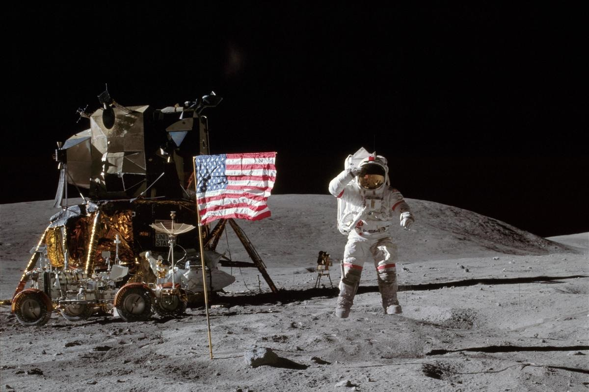
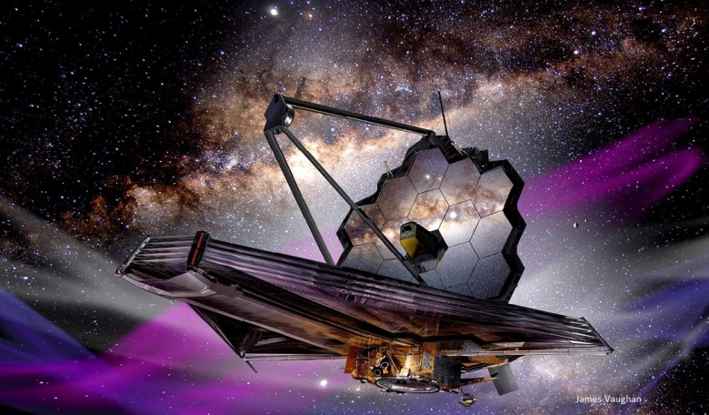
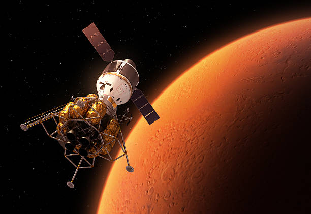
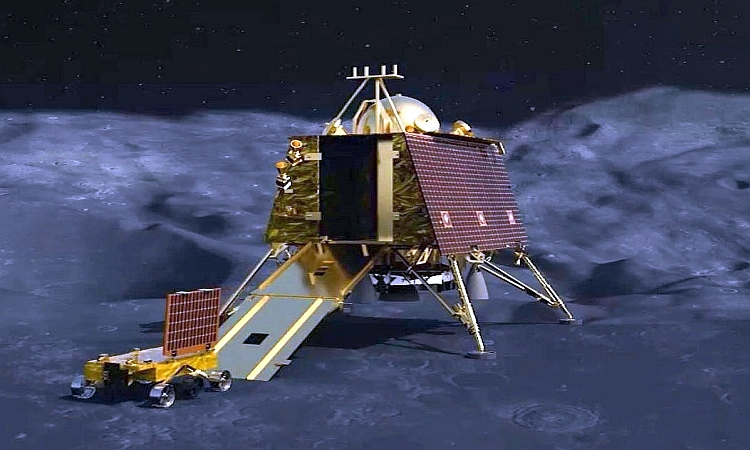
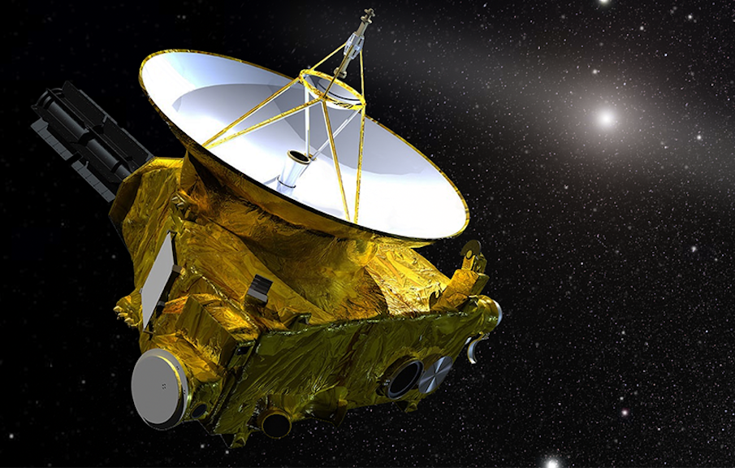
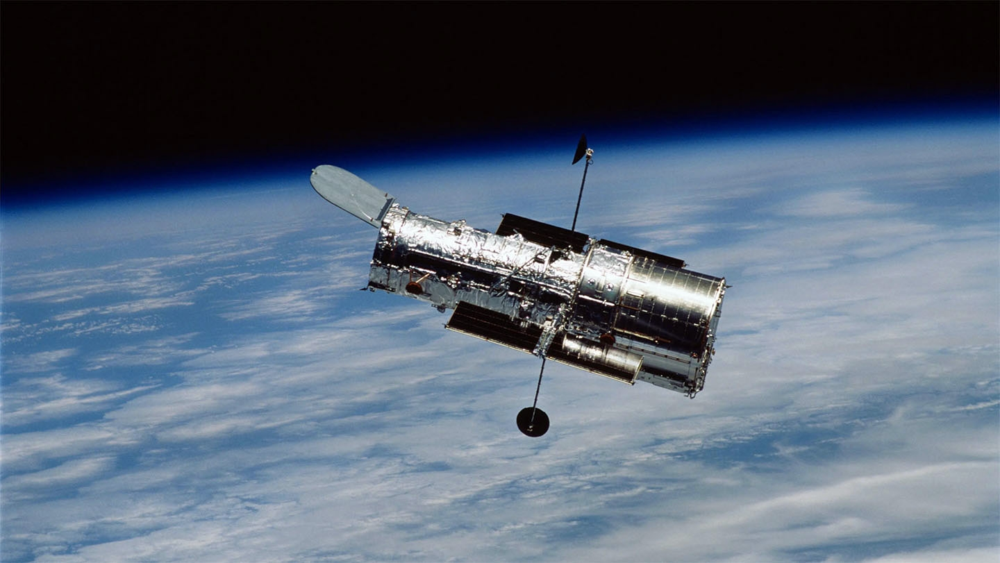

Apollo 11
The legendary 1969 NASA mission that first landed humans on the Moon. Neil Armstrong and Buzz Aldrin made history with humanity’s first steps on another world.
Apollo 11 was the first spaceflight to land humans on the Moon, conducted by NASA from July 16 to 24, 1969. Commander Neil Armstrong and Lunar Module Pilot Edwin "Buzz" Aldrin landed the Lunar Module Eagle on July 20 at 20:17 UTC, and Armstrong became the first person to step onto the surface about six hours later, at 02:56 UTC on July 21. Aldrin joined him 19 minutes afterward, and together they spent about two and a half hours exploring the site they had named Tranquility Base upon landing. They collected 47.5 pounds (21.5 kg) of lunar material to bring back to Earth before re-entering the Lunar Module. In total, they were on the Moon’s surface for 21 hours, 36 minutes before returning to the Command Module Columbia, which remained in lunar orbit, piloted by Michael Collins.

James Webb Space Telescope
Launched in 2021, JWST is the most advanced infrared space telescope, capable of observing the earliest galaxies and analyzing exoplanet atmospheres.
The James Webb Space Telescope (JWST) is a space telescope designed to conduct infrared astronomy. It is the largest telescope in space, and is equipped with high-resolution and high-sensitivity instruments, allowing it to view objects too old, distant, or faint for the Hubble Space Telescope.[9] This enables investigations across many fields of astronomy and cosmology, such as observation of the first stars and the formation of the first galaxies, and detailed atmospheric characterization of potentially habitable exoplanets.
Webb can also observe objects in the Solar System at an angle of more than 85° from the Sun and having an apparent angular rate of motion less than 0.03 arc seconds per second.This includes Mars, Jupiter, Saturn, Uranus, Neptune, Pluto, their satellites, and comets, asteroids and minor planets at or beyond the orbit of Mars. Webb has sufficient near-IR and mid-IR sensitivity to be able to observe virtually all known Kuiper Belt Objects. In addition, it can observe opportunistic and unplanned targets such as supernovae and gamma ray bursts within 48 hours of a decision to do so.

Mars Orbiter Mission (Mangalyaan)
India's ISRO made history in 2013 by reaching Mars orbit on its first attempt, becoming a global symbol of cost-effective space engineering.
Mars Orbiter Mission (MOM), unofficially known as Mangalyaan (Sanskrit: Maṅgala 'Mars', Yāna 'Craft, Vehicle'), is a space probe orbiting Mars since 24 September 2014. It was launched on 5 November 2013 by ISRO. It was India's first interplanetary mission and it made ISRO the fourth space agency to achieve Mars orbit, after Soviet space program, NASA, and the European Space Agency. It made India the first Asian nation to reach Martian orbit. It also made ISRO the first national space agency in the world to do so with an indigenously developed propulsion system and the second national space agency to succeed on its maiden attempt, after the European Space Agency accomplished this in 2003 using a Roscosmos Soyuz/Fregat rocket.

Chandrayaan-3
ISRO's 2023 Moon mission that successfully soft-landed near the Moon’s south pole, a region never explored by any nation before.
Chandrayaan-3 (CHUN-drə-YAHN /ˌtʃʌndrəˈjɑːn/) is the third mission in the Chandrayaan programme, a series of lunar-exploration missions developed by ISRO.[10] The mission consists of Vikram, a lunar lander, and Pragyan, a lunar rover, as replacements for the equivalents on Chandrayaan-2, which had crashed on landing in 2019.
The spacecraft was launched on July 14, 2023, at 14:35 IST from the Satish Dhawan Space Centre (SDSC) in Sriharikota, India. It entered lunar orbit on 5 August, and touched down near the lunar south pole, at 69°S,[11] on 23 August 2023 at 18:04 IST (12:33 UTC). With this landing, ISRO became the fourth national space agency to successfully land on the Moon, after the Soviet space program, NASA and CNSA, and the first organization in the recorded human history to achieve a soft landing near the lunar south pole.

Voyager 1
Launched in 1977, Voyager 1 is the farthest spacecraft from Earth, now traveling through interstellar space and sending back invaluable cosmic data.
he Voyager program is an American scientific program that employs two interstellar probes, Voyager 1 and Voyager 2. They were launched in 1977 to take advantage of a favorable planetary alignment to explore the two gas giants Jupiter and Saturn and potentially also the ice giants, Uranus and Neptune—to fly near them while collecting data for transmission back to Earth. After Voyager 1 successfully completed its flyby of Saturn and its moon Titan, it was decided to send Voyager 2 on flybys of Uranus and Neptune
After the planetary flybys were complete, decisions were made to keep the probes in operation to explore interstellar space and the outer regions of the Solar System. On 25 August 2012, data from Voyager 1 indicated that it had entered interstellar space.

New Horizons
New Horizons performed the first flyby of Pluto in 2015, revealing its mountains, glaciers, and atmosphere before heading deeper into the Kuiper Belt.
The New Horizons mission, launched by NASA in 2006, is a groundbreaking robotic spacecraft that provided humanity's first close-up look at the dwarf planet Pluto in 2015 and the Kuiper Belt object Arrokoth in 2019, revealing details about these distant icy worlds and the early solar system, continuing to explore the outer reaches of space. Managed by Johns Hopkins University's Applied Physics Lab (APL), it successfully explored the Pluto system and KBOs (Kuiper Belt Objects) with its advanced instruments, expanding our understanding of the solar system's formation.
On January 19, 2006, New Horizons was launched from Cape Canaveral Space Force Station by an Atlas V rocket directly into an Earth-and-solar escape trajectory with a speed of about 16.26 km/s (10.10 mi/s; 58,500 km/h; 36,400 mph). It was the fastest (average speed with respect to Earth) human-made object ever launched from Earth.[8][9][10][11] It is not the fastest speed recorded for a spacecraft, which, as of 2023, is that of the Parker Solar Probe. After a brief encounter with asteroid 132524 APL, New Horizons proceeded to Jupiter, making its closest approach on February 28, 2007, at a distance of 2.3 million kilometers (1.4 million miles). The Jupiter flyby provided a gravity assist that increased New Horizons' speed; the flyby also enabled a general test of New Horizons' scientific capabilities, returning data about the planet's atmosphere, moons, and magnetosphere.

Hubble Space Telescope
Operating since 1990, Hubble has captured some of the most iconic deep-space images ever taken, transforming modern astronomy.
The Hubble Space Telescope (HST) is a renowned, large space observatory launched in 1990 by NASA and ESA, orbiting Earth to capture incredibly clear images of the universe, revealing deep views of distant galaxies, nebulae, and planets, revolutionizing astronomy by providing data in ultraviolet, visible, and near-infrared light, and serving as a vital research tool with ongoing discoveries even after decades of operation.
Hubble features a 2.4 m (7 ft 10 in) mirror, and its five main instruments observe in the ultraviolet, visible, and near-infrared regions of the electromagnetic spectrum. Hubble's orbit outside the distortion of Earth's atmosphere allows it to capture extremely high-resolution images with substantially lower background light than ground-based telescopes. It has recorded some of the most detailed visible light images, allowing a deep view into space. Many Hubble observations have led to breakthroughs in astrophysics, such as determining the rate of expansion of the universe.

Voyager 2
Voyager 2 is the only spacecraft to visit all four gas giants. It continues operating in interstellar space, expanding our understanding of the heliosphere.
Voyager 2 is a space probe launched by NASA on August 20, 1977, as a part of the Voyager program. It was launched on a trajectory towards the gas giants (Jupiter and Saturn) and enabled further encounters with the ice giants (Uranus and Neptune). The only spacecraft to have visited either of the ice giant planets, it was the third of five spacecraft to achieve Solar escape velocity, which allowed it to leave the Solar System. Launched 16 days before its twin Voyager 1, the primary mission of the spacecraft was to study the outer planets and its extended mission is to study interstellar space beyond the Sun's heliosphere
Voyager 2 successfully fulfilled its primary mission of visiting the Jovian system in 1979, the Saturnian system in 1981, Uranian system in 1986, and the Neptunian system in 1989. The spacecraft is in its extended mission of studying the interstellar medium. It is at a distance of 141.55 AU (21.2 billion km; 13.2 billion mi) from Earth as of November 2025